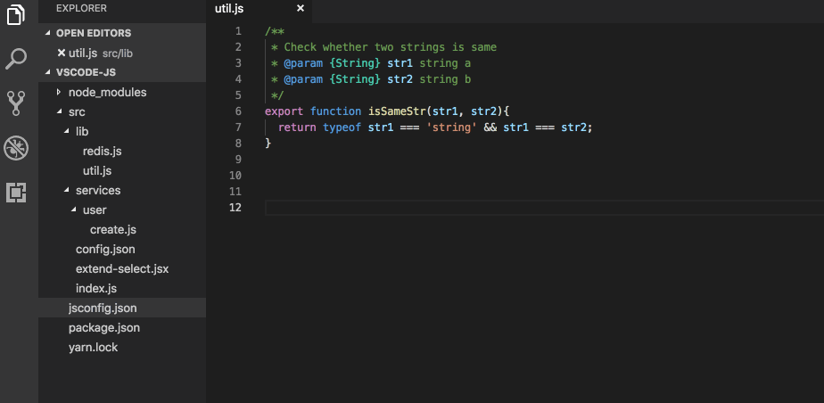
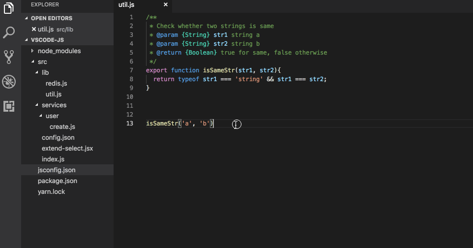
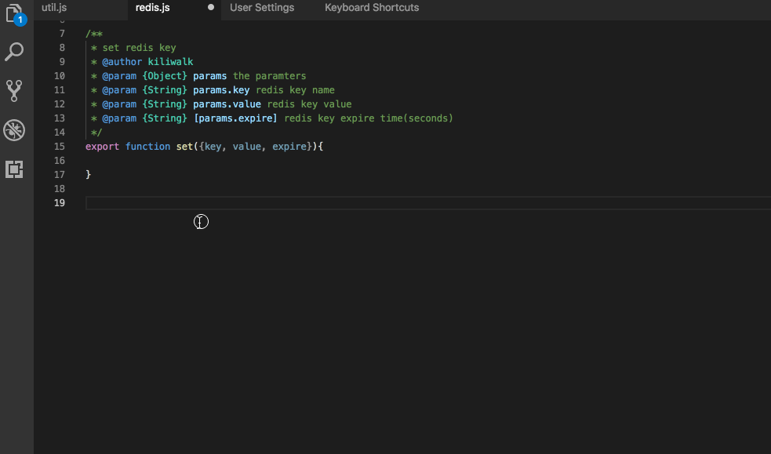

在 Visual Studio Code JavaScript 工程中使用 JSDoc
不使用 TS 是否也能做到类型提示和校验？在 VSCode 中我们可以通过 JSDoc 来实现。
JSDoc

JSDoc 本身是用来对方法、变量、模块、类等进行结构化文档注释用的。它本身还有一个对应的工具，扫描所有源代码文件里的 JSDoc 注释并生成 API 文档，就像 JavaDoc 一样。
但是在 VSCode 里，它被赋予了更加强大的地位。它不仅仅是一个文档说明，还可以用来做智能提示（IntelliSense），而且可以做到函数的参数级别。甚至还能做参数类型、值类型的校验！也许你会想到 TypeScript 的 definition 文件（.d.ts）。是的，它也有参数类型校验，但是它没有参数说明。如果要参数说明，还是要写 JSDoc。与其多写一遍 definition，不如直接使用 JavaScript + JSDoc 更加方便。当然这一切都是依赖于 TypeScript，我们不能因此去否定它。
我们来看看 JSDoc 所带来的强大提示功能。

从上面的动图可以看到，函数的注释、参数的注释、参数注释的输入跟随都有了。
参数、类型校验
文档提示只是第一步。我们知道 JavaScript 是动态类型、弱类型的语言。变量没有类型声明，运行时还可以随意变更值类型，还有很多内置的自动类型转换场景。虽然这是吸引我的很大的一方面，不过在团队协作里，最好还是能够做到约束、检查一下。VSCode 就为我们提供了这么一个能力。
首先我们要打开 Setting 中的 JavaScript 校验："javascript.validate.enable": true。然后在 jsconfig.json 中配置如下：
{
"compilerOptions": {
"checkJs": true
}
}
我们再来看看：

是不是很不错？VSCode 帮我们做了必填参数、参数类型、返回值类型等各项检测与校验。这样我们在写代码的时候，一方面能够看到文档注释，一方面又能随时知道调用方式是否错误，快哉！
对象解构形式参数
/**
* set redis key
* @author kiliwalk
* @param {Object} params the parameters
* @param {String} params.key redis key name
* @param {String} params.value redis key value
* @param {String} [params.expire] redis key expire time(seconds)
*/
export function set({ key, value, expire }) {}
如上示例，我们使用了 Object Destruction 定义了方法的参数。对应的，JSDoc 里可以通过 . 来为对象内部的属性提供文档。来看看使用时的效果：

这里有一个地方要注意，参数文档那一个小窗口，如果一开始没有显示，则要再按一次 ctrl+space（macOS），也就是额外触发一次智能提示。这个在 VSCode 里叫“toggleSuggestionDetails”（可以在快捷键设置里找到它）。
VSCode 里还支持更加复杂的 JSDoc 类型声明。在涉及到复杂对象的输入、输出时，我们可能就需要用到了。有兴趣的同学可以去这里看看：https://github.com/Microsoft/TypeScript/wiki/JsDoc-support-in-JavaScript 。
希望通过这几篇文章，能够改善大家日常的 JavaScript 开发体验。这里面还有很多东西值得我们去探索。
现在，有没有感觉在 VSCode 里开发 JavaScript 完全是另一番体验？